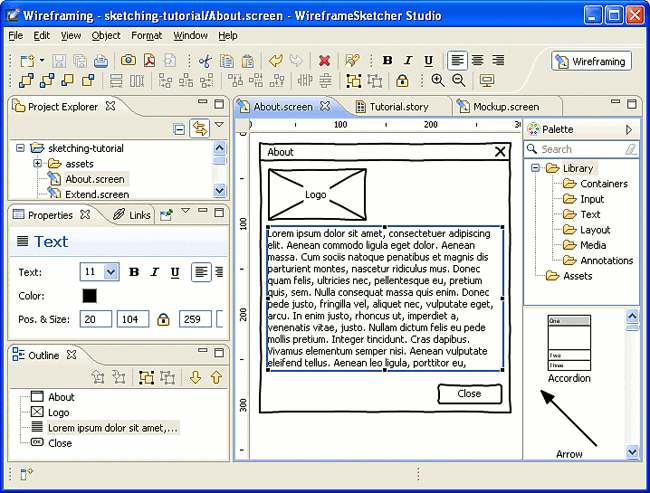

To get started open the Wireframing perspective in Eclipse using Window > Open Perspective > Other… > Wireframing. The screenshot below shows all the important views used by WireframeSketcher. These views are open by default in Wireframing perspective:

Next: Working with Projects